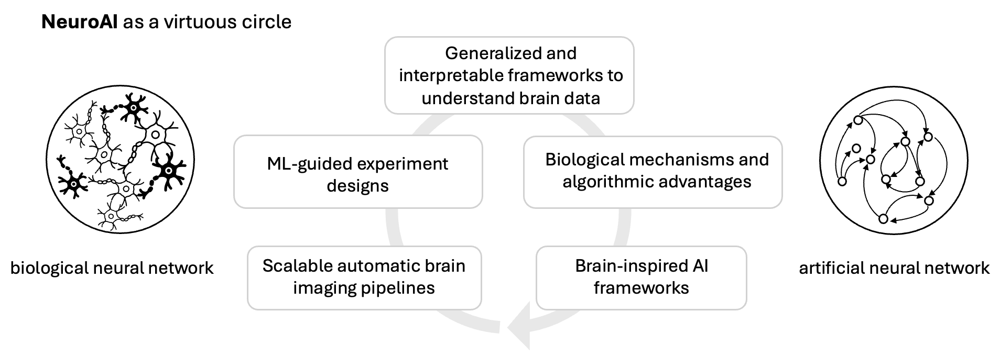

|
Research
My research lies in the intersection of natural intelligence and artificial intelligence. I am working on accelerating scientific discovery in the brain with machine learning, and bridging the gap between artificial and biological neural networks. You could check my research summary here.
My research is recognized with several honors, including the MathWorks Fellowship, Shanahan Foundation Fellowship, and an NIH award.
I was selected as 2022 Rising Stars in EECS and our work has been featured in MIT News and Forbes.
I am broadly interested in
(1) Building fast and scalable automatic brain data collection pipelines.
(2) Developing interpretable and generalized methods in neuroscience for data-driven discovery, understanding the mechanisms of coding, computation, and learning within biological neural networks.
(3) Applications in brain computer interface, decoding brain signals into behaviors, images and languages.
(4) Building brain-inspired AI frameworks.
|
|

|
|
News
|
Honors and Awards
- Most Creative Application of AI, Michigan AI Symposium, 2023
- Shanahan Foundation Fellowship, Allen Institute & University of Washington, Seattle, 2022
- Rising Stars in EECS, 2022
- MathWorks Fellowship, MIT EECS, 2021
- NIH Awards, MICCAI, 2020
- Grass Instruments Co. Fellowship, MIT EECS, 2017
- Tang Lixin Fellowship, Tsinghua (30 in 3000), 2017
- Best Paper Awards, Optofluidics, 2016
|
Invited Talks and Services
- Talk on Accelerating Scientific Discovery in the Brain in the Age of AI, 2025, A3D3 Seminar, Caltech, 2025.
- Tutorial on Interpretable NetFormer to Recover Dynamical Connectivity, Workshop on Data-Driven and Large-Scale Modeling in Neuroscience, Gatech, 2025.
- Talk on Accelerating Scientific Discovery in the Brain with Machine Learning, TReNDS Center, 2025.
- Talk on Bridging the Gap Between the Structure and Function in the Age of AI, Allen Institute, 2024.
- Talk on Accelerating Scientific Discovery in the Brain with Machine Learning, Gatech CSE, 2024.
- Talk on Accelerating Scientific Discovery in the Brain with Machine Learning, UNC CS/DS, 2024.
- Guest Lecture on Transformers as Identity and Structure Learners for Neural Dynamics, Transformers in Neuroscience, CSE 5900, University of Washington, 2024.
- Talk on Identification of Cell Types and Connectivity from In Vivo Neural Activity Recordings, Brain Science Seminars, Allen Institute, 2024.
- Spotlight Talk on Bridge the Gap between Biological and Artificial Neural Networks, Michigan AI Symposium, 2023.
- Spotlight Talk on Neuronal Time-Invariant Representations, NeuroAI in Montreal, 2023.
- Guest lecture on Biophysics VAEs, Deep Learning for Neuroscience, CSE 599N, University of Washington, 2023.
- Talk on How to Link Multi-Modal Neural Data with Deep Learning, NeuroAI in Seattle, 2022.
- Talk on Deep Learning Tools for Next-Generation Connectomics, Allen Institute, 2022.
- Talk on Connectome-Constrained Modeling, Computational Neuroscience Seminar, Flatiron Institute, 2022.
- Talk on Connectome-Constrained Modeling, CVML meeting, HHMI Janelia Research Campus, 2021.
- Talk on Cross-Classification Clustering Segmentation, Machine Learning & Biology NSF Workshop, 2019.
- Reviewer for Nature, Cell Reports, NeurIPS, ICLR, ICML, CVPR, ECCV, ICCV, AAAI.
|
Former Students
- Wuwei Zhang, now PhD student at Princeton University
- Yicong Li, now PhD student at Harvard University
- Xinyue (Thea) Xu, now PhD student at Hong Kong University of Science and Technology
- Zhongren Chen, now PhD student at Yale University
|
|

{kind=link}